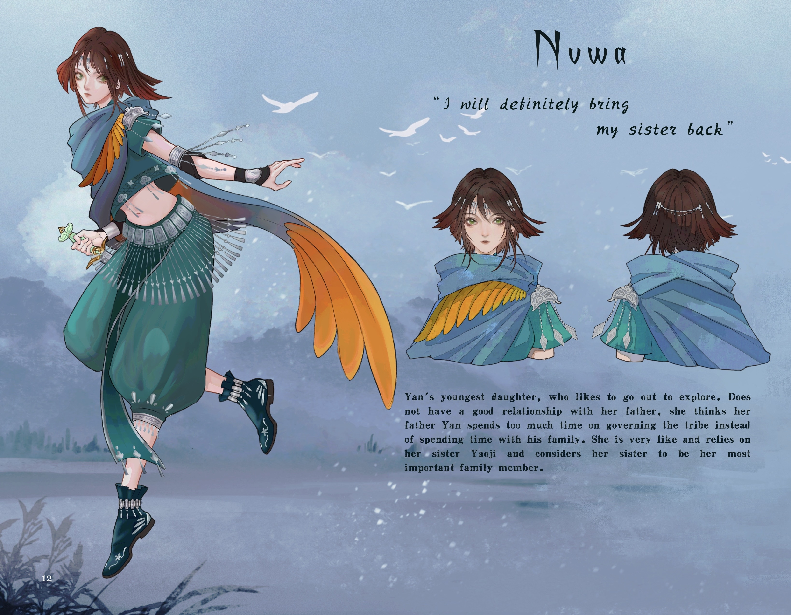
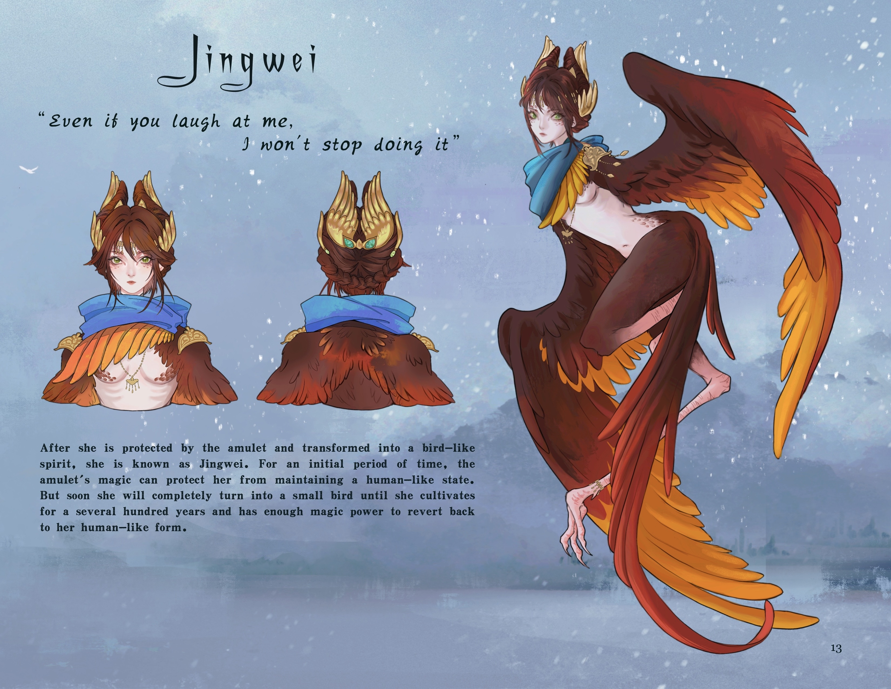
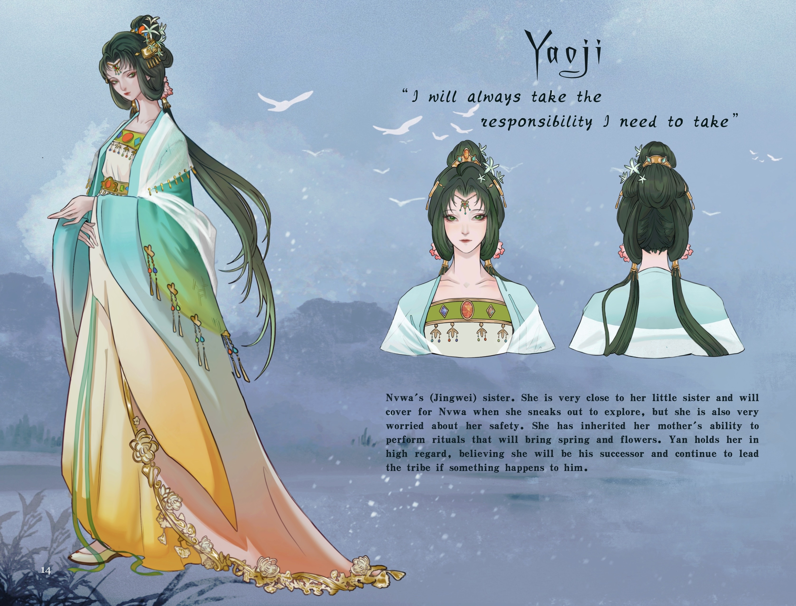
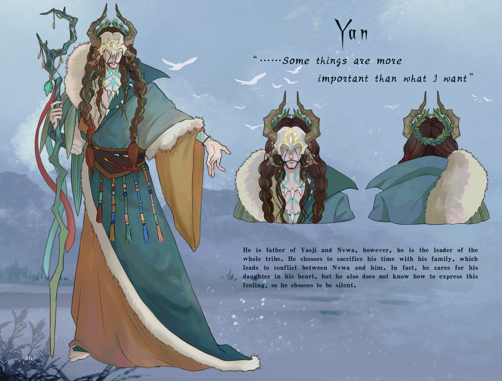
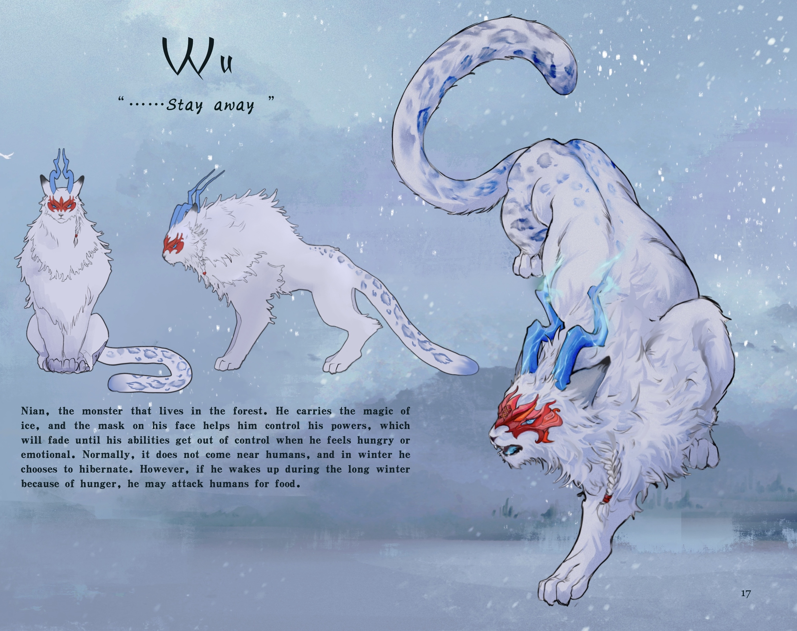
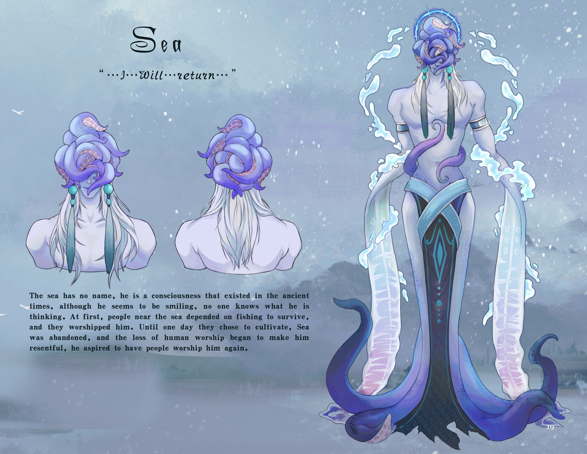
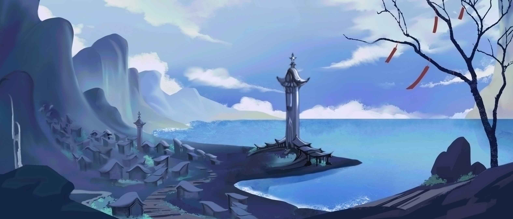
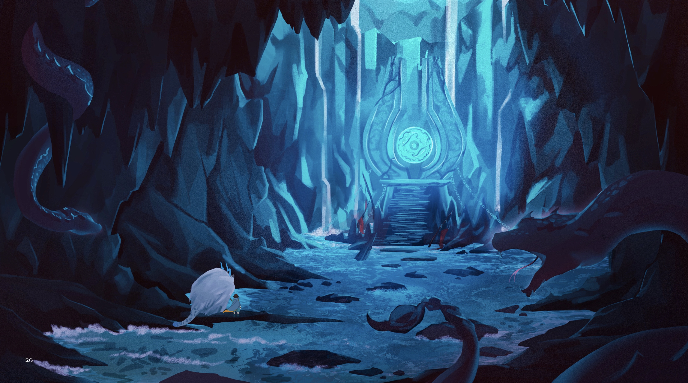

An entire world, built to tell one story
The Art of Jingwei is a self-authored fantasy artbook — story, characters, and every illustration created solo over my final year. It takes the ancient Chinese legend of Jingwei, the girl who drowned in the sea and became a bird, and expands it into a full original narrative with its own cast, mythology, environments, and architecture.
As a thesis it was equal parts storytelling and design: writing the world, then designing everything that lived in it. The result is a 25-page artbook spanning narrative spreads, character sheets, creature design, and cinematic environment paintings.
Retelling a forgotten girl's story
In the original myth, Jingwei is little more than a cautionary symbol — a mischievous girl who paid with her life. I wanted to tell the story that's missing from that record. My version follows a girl who rows out alone into a long winter sea to find her lost sister, is swallowed by the waves, and is saved by an amulet — at the cost of slowly turning into a bird forever.
"I wanted to revisit the women of Chinese mythology — not as the obedient figures they are often remembered as, but as complex, imperfect people with desires, fears, and stories of their own."
— Artist statementThe companions I designed for her are flawed too — not flawless heroes, but imperfect people trying, in their own broken ways, to save the world. That tension is the heart of the book.
A cast of gods, mortals, and monsters
Each character was designed from the inside out — personality and role first, then costume, silhouette, and color. The cast blends Chinese mythological figures with original creatures, unified by a hanfu-inspired, ink-and-watercolor visual language.






From snowbound villages to the sea god's temple
Beyond the cast, I designed the world they live in — the tribe's ritual architecture, the snow-locked coastal village, the frozen forest, and the luminous underwater temple of the abandoned sea god. These cinematic environments set the mood and ground the story's mythology in a place that feels real.




Want to build a world together?
The Art of Jingwei is one of the most complete expression of my illustration, storytelling, and worldbuilding practice to date. If you're imagining a story, a cast of characters, or a world waiting to be explored, I'd love to hear about it.
Get in touch ↗ ← Back to portfolio